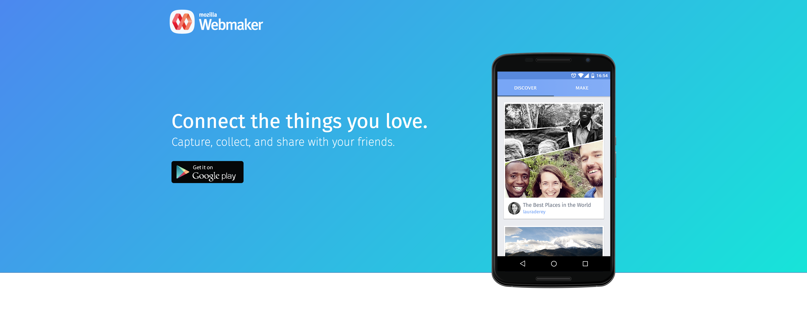

Mozilla Webmaker

Writing about this work
- Evolving Webmaker in 2013
- Rethinking the Architecture of Webmaker
- The Value of Showcasing Craft
- Designing the Platform to Teach the Next Generation of Webmakers
- Mobile Webmaking Concept : Meeting Makers Where they are
- Building the Next Generation of Webmakers
- Revised UI/UX for the app formerly known as Webpage Maker
- Curate your learning through Webmaker Projects